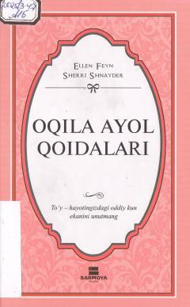

OAOila qurish va turmush o'rtoq bilan munosabatlarni mustahkamlash bo'yicha amaliy qo'llanma.
Ushbu kitob oilaviy hayotda baxtli va muvaffaqiyatli bo'lishni istagan ayollar uchun mo'ljallangan qo'llanmadir. Unda turmush o'rtoq bilan munosabatlarni yaxshilash, oilaviy nizolarni hal etish va o'z qadr-qimmatini saqlab qolish bo'yicha amaliy tavsiyalar berilgan.